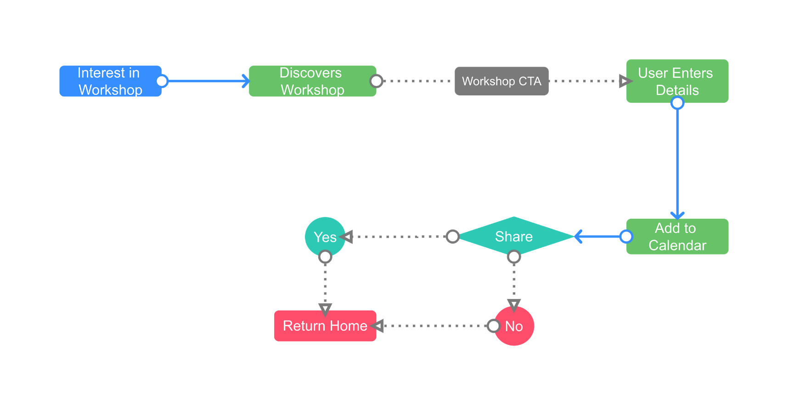
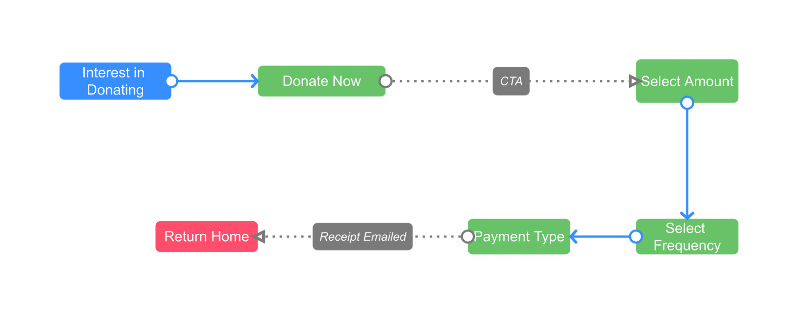

- Client
- NFP
- Year
- 2020
- Service
- Web Redesign
- Website
- treesforlife.org.au
Part 1
The Problem
The website needs a little polishing and clearer, simpler user flows, as well as new functionality to increase community engagement.
The Solution
A redesigned homepage that better communicates Trees for Life’s mission to visitors and new pages with a new workshop sign-up feature and a simplified donation process.
Stakeholder Interview
By intervirwing the stakeholder, we identified key areas of improvement on the site:
- Too many different pages and too much text
- Needs to be more minimalistic and visually appealing
- Needs an online booking systems for volunteering opportunities
- A bigger emphasis on TFL being a South Australian not-for-profit organisation
Part 2
User Research
Key Insights From Surveys:
- Most participants were aged 25- 44 and already involved in an NFP
- Attending a workshop and donating were preferred options as a first step in engaging with Trees for Life
- Needs an online booking systems for volunteering opportunities
- A bigger emphasis on TFL being a South Australian not-for-profit organisation
Key Insights From Interviews and Tests:
- Evidence of impact of NFP
- Sign-up and booking
- Confirmation for workshops
- Secure and simpler donations
- Better content chunking
Part 2
User Persona
Name
Jasper Brown
Age
35
Location
Adelaide
Occupation
Photograpger
Goals
- An easy way to donate
- Sign-up form, confirmation email and calendar integration for workshops and volunteering opportunities
Pain Points
- Too many options to volunteer
- Length of donation process
- Workshop confirmations
User Flow
Workshops
Donate
Part 4
Style Guide
Colours
Typography
| Type | Example | Font | Font Size |
|---|---|---|---|
| Heading 1 |
Heading 1 |
Montserrat Bold | 48px |
| Heading 2 |
Heading 2 |
Montserrat Medium | 32px |
| Secondary 1 |
Subheading |
Montserrat Regular | 24px |
Paragraph |
Paragraph | Montserrat Regular | 16px |


Part 4
Low Fidelity Prototype
Goals
Simplify Workshop and Donation pages.
Redesign homepage.
Highlight impact of patrons.
Part 5
AB Testing
OThrough AB Testing, we tested slight changes to our donation page.
We found mixed reviews of keeping subscription checkbox above the “confirm” CTA, however decided to keep that way.
No automatic donation frequency, as user may unknowingly subscribe to payments.

Part 6
Next Steps
Workshops to include non members to attend for a small fee.
Simplified volunteer information flow and sign-up process.